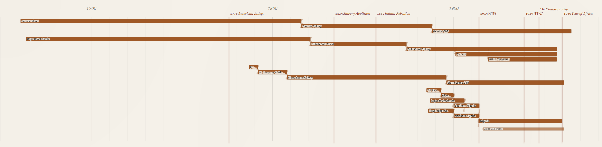
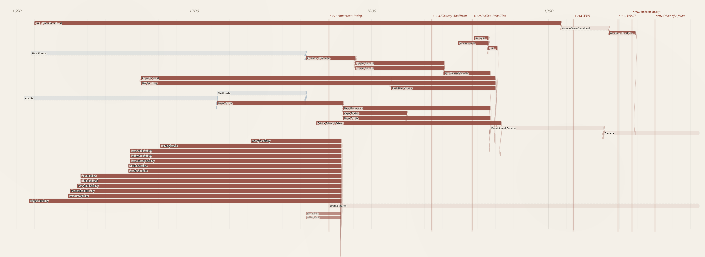
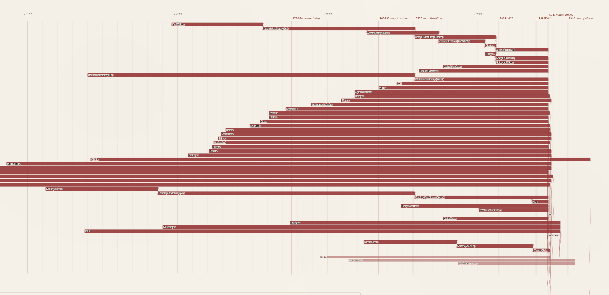

Wikidata grounding as a shared foundation
Computational history is now possible for individual scholars without grant-funded labs. Coding agents are empowering thousands of historians to build new datasets, but this risks a proliferation of data silos. If we all assign different unique identifiers to disambiguate Victoria the Queen from Victoria, British Columbia, we end up rebuilding the same disambiguation work in every project, and losing the chance for our datasets to compose into anything larger than themselves.
This is the problem linked open data was designed to solve. The idea is straightforward: if every dataset attaches the same persistent identifier to the same entity, then datasets compose. Wikidata has already done much of this work. The first page of results for “Victoria” disambiguates the queen, the British Columbian capital, the Australian state, the capital of the Seychelles, a Roman goddess of victory, a main-belt asteroid, the Victoria and Albert Museum, and roughly a dozen others, each with a permanent identifier any historian’s dataset can attach to.
Consider what this means in practice. A historian working on nineteenth-century Nova Scotia and a historian working on the East India Company army are unlikely to know each other’s work. Their corpora are different, their archives are in different buildings, and their conferences do not overlap. But if both of them ground their data to Q335381, their datasets join automatically, even though one historian’s records name him George Ramsay, Governor of Nova Scotia from 1816, and the other names him the Earl of Dalhousie, Commander-in-Chief in India from 1830. A query about Dalhousie’s career can now reach across one historian’s biographical work in Halifax archives and another’s regimental records in Calcutta, without either of them having planned for the integration. The work that previously required weeks of reconciliation becomes a single query. The promise of computational history is not that everyone produces their own dataset. It is that many small datasets compose into a research commons larger than any of them.
There have been concerns in the digital humanities community about using Wikidata as scholarly infrastructure. Wikidata is crowdsourced; its data model is determined by its community of editors; some of its modelling decisions, of which the handling of gender is the canonical case, have been incompatible with the priorities of researchers working on people whose lives the standard categories misrepresent. The response, in projects like LINCS (Linked Infrastructure for Networked Cultural Scholarship), was to build proper scholarly infrastructure with controlled vocabularies, considered ontological commitments, and editorial accountability. Those choices were correct, and I remain hesitant about building knowledge graphs on the Wikidata platform itself.
But the worry applies to hosting scholarship on Wikidata, treating Wikidata itself as the place where your scholarly conclusions live, where your data sits, and where your interpretations are subject to revision by anyone who edits the relevant pages. It does not apply to grounding scholarship to Wikidata, which is a different operation. LINCS already works this way. The graph LINCS publishes is its own linked open data, carefully modelled, with editorial accountability to the scholars who contribute to it. LINCS uses Wikidata QIDs directly as the identifiers for entities Wikidata already covers, and mints its own only when no alternative exists. The model is sovereign; the identifiers are shared. Computational historians can choose between fully compliant CIDOC-CRM linked open data and simple research spreadsheets. If we attach Wikidata identifiers to the entities in our data, we make our work interoperable with other projects. Anyone working on a related corpus, yours or someone else’s, now or in twenty years, can join the two without asking permission, because the identifier is shared.
The reason this matters is that the alternative does not scale. No scholarly project, no matter how well-funded, can produce identifiers for over 120 million historical people, places, organisms, events, and concepts on its own. Wikidata has done that work. Its coverage is uneven and its modeling has problems, but it is the only system at the right scale for historical research as actually practised. Ignoring it produces silos. Grounding to it, while keeping your own dataset, allows historians to take advantage of the strengths of Wikidata without incorporating its problems. A historian working on Bengal in 1850 and a historian working on Jamaica in 1840 do not need to coordinate, share infrastructure, or even know each other to produce datasets that interoperate. They need to use Wikidata identifiers for the people, places, and institutions in their sources. That is teamwork without a team. This is not a call for centralized infrastructure. It is the opposite. It is a call for a small set of shared conventions: use shared identifiers; ground to Wikidata; create new Wikidata entries when the substrate is thin. This lets individuals and small groups produce work that connects to a research commons without anyone having to build the commons explicitly. The commons is the consequence of the convention.
As the remainder of this working paper will demonstrate, the process is relatively easy and requires three basic commitments:
First, add Wikidata identifiers to the entities in your datasets. If you have a spreadsheet of historical figures, add a column for their Wikidata identifier.
Second, publish your data with the identifiers attached. A project website, a Zenodo deposit, a GitHub repository: the venue matters less than the principle that the identifiers are present and durable, so that someone reading your work in ten years can still find them.
Third, treat Wikidata-editing as part of historical practice. When you find that a colonial administrator, a rural township, or an eighteenth-century concept lacks an entry, contribute one with sources. We need to make this into an evolving standard of methodological rigour, on the same continuum as proper archival citation.
The British Empire Evolution Knowledge Graph
This project started small and spiraled out of control. I was testing LLMs’ ability to extract and ground information from Internet Archive documents related to the British Empire in the nineteenth century. It occurred to me I should start with a foundational dataset of all the colonies. I asked a coding agent to help me create a knowledge graph of all the colonies in the late nineteenth century. It quickly produced a graph that covered a lot of the empire, but was riddled with errors. So the project snowballed as I tried to figure out how to improve accuracy and extend the scope to include the full overseas empire. Wikidata was an obvious starting place. I knew from the Trading Consequences project (2012-2016) that GeoNames does not include many of the historical geographical entities such as Rupert’s Land or the Oil Rivers Protectorate. Wikidata, in contrast, has all of these entities as it is linked to Wikipedia articles. Most British colonies have a Wikipedia entry and a Wikidata ID: https://en.wikipedia.org/wiki/Niger_Coast_Protectorate and https://www.wikidata.org/wiki/Q2566427. Wikidata also has entries for minor princely states without an English language Wikipedia page, such as Dedhrota (https://www.wikidata.org/wiki/Q131126101). Working with Claude Code, I tried to identify and ground all of the British colonies in Wikidata and develop them into a knowledge graph using Neo4j as the graph engine. The project grew to include colonies starting with the Crown of Ireland Act of 1541 and the founding of Virginia in 1607. The project was iterative as I identified errors and worked with Claude to develop plans to verify the data. I realized I needed to be able to see the colonies and the temporal relationships between colonies as they merged, split or gained independence. This pushed me to develop a visualization to make the data easier to follow and correct.
The visualization needed to track change over time and show the chain of relationships as smaller coastal colonies merged and evolved into larger colonies, as was the case in West Africa.

The visualization proved important in correctly mapping out the colonial history of what became Canada, capturing the conquest of the French Empire, the division and later merger of Upper and Lower Canada, and the shorter history of two colonies merging into one before British Columbia joined Confederation.

South Asia created unique challenges: hundreds of princely states, including many that predated Britain’s overseas empire. I decided to select a geographically diverse sample of these states in the visualization while including all of them in the underlying knowledge graph. The South Asia section highlights a limit in this visualization, where screen space and data constraints meant every colony is represented by the same width of bar, so the Bombay Presidency appears the same as the Factory at Surat despite their different scale and levels of colonial control. I could use population estimates or square kilometres of territory to differentiate between the major colonies and minor trade forts, but that would require data for each colony and a way to represent change over time. The current visualization prioritizes identifying all of the colonies, their time span and how they relate over visualizing the social, political or economic significance of the different colonies.

The iterative process continued after completing the visualization. I needed to ensure all of the Wikidata QIDs matched the colonies. Most of them were reviewed in an earlier human-in-the-loop process. I used Claude Code to create an HTML website that pulled the description from Wikidata and presented it alongside the colony name. I then either verified or provided an alternative. As I worked through the list, I found some minor island colonies did not have a Wikidata ID for the colonial period, so I decided to use the ID for the geographical islands. I also found a few colonies not included in Wikidata and had to decide whether the current political entity could be used as a stand in. In a final process, I used Claude to search every row in the knowledge graph to ensure the Wikidata ID matched, and it found a small number of errors. I completed a human review of these errors and published the final version with notes attached for all of the colonies where I had to use a geographical entity, the modern political entity, or a broader Wikidata entity that spans multiple sub-periods of colonial administration, in place of a unique Wikidata ID for the colony. I am now considering adding these entities into Wikidata as a contribution to that project and to make the knowledge graph more consistent.
Property graphs in historical research
The choice to model in Cypher places this dataset within a small but growing tradition of historical and digital-humanities projects that have made the same call. Christopher Warren and colleagues built Six Degrees of Francis Bacon (Warren et al. 2016) on a property graph of roughly 13,000 early-modern persons and 200,000 typed relationships (PARTNER_OF, LETTER_TO, TRANSLATED, LIT_CRIT_ON), and documented an evolution from storing relationships as properties of nodes to adding dedicated nodes and labels as their research questions matured. The same model has been applied across very different historical subfields, including Roman prosopography (Varga and Bornhofen 2024), network analyses of postwar reparations activism (Pan 2022), and medieval Korean kinship and patronage networks (Cha 2026). Jon MacKay’s (2018) Programming Historian tutorial, built around the 1912 Canadian corporate-interlock directorates, has made Cypher part of the field’s pedagogical apparatus.
What unites these projects is not a vendor preference but a recurring set of fits between the property-graph model and the work historians actually do. Edges that carry their own properties let scholars annotate ties with dates, sources, and qualifications without distorting the schema around them. Questions that follow a chain of relationships across many steps, such as a political succession from colony to independent state to federation, or a kinship descent across generations, can be asked of the database in a single query rather than reconstructed step by step from many smaller ones. And because the schema can evolve as the source material is better understood, the model does not require committing to an ontology before the research question is fully formed, which fits the iterative way historical understanding develops.
Where the field is still thin is in published humanist work on GraphRAG, the LLM-augmented retrieval pattern that uses a knowledge graph as both context for and constraint on generation. Computer-science work on GraphRAG has accelerated through 2024 and 2025 (Edge et al. 2024; Han et al. 2025), and cultural-heritage-adjacent applications have begun to appear, but a flagship humanist-authored study of GraphRAG on historical archives has not yet been published. This is an opening rather than a settled question. Property-graph datasets like this one are well-positioned for that work when historians take it up, and the present paper is intended in part as a substrate that GraphRAG-oriented research can attach to.
Property graphs now, RDF later
A knowledge graph can be structured in more than one way, and the choice matters enough that a historian should understand it before adopting either. This project is a property graph: territories are nodes, the relationships between them are labelled edges, and both carry properties such as dates and sources. The main alternative is to publish the same material as linked open data, using a storage format called RDF and an international standard vocabulary, CIDOC-CRM, designed for cultural-heritage data. CIDOC-CRM is carefully designed and the most widely adopted shared vocabulary of its kind in the digital humanities, and it is built for exactly the cross-project composition this paper argues for: material modelled in it can in principle be combined with any other project that has done the same. It is reasonable to ask why I did not use that standard from the start. The answer is not that it is the wrong target. It is that a property graph is far easier to build and to read, and the standards-based version can still be produced from it at the end.
It helps to be concrete about what a CIDOC-CRM version of this dataset would involve. Each polity would become a persistent entity node. Each of the transitions this project records as a typed edge (a colony evolving into a dominion, a territory partitioned into successor states, several colonies federating into one) would become an event node, carrying its own date, its own provenance, and its own type. The relationship a historian actually wants to query, “A became B,” is then never an edge to follow but a path through an intervening event. The 1,203 typed relationships in this graph would become 1,203 event nodes and their scaffolding, before anything new is said about the empire.
A property graph is easier to build because the model maps directly onto what the historian is asserting. “The Province of Canada became the Dominion of Canada in 1867” is one edge with one date. There is no prior decision about which event class applies, no time-span node to instantiate, no property whose domain and range have to be checked. This matters most for the way this project was built: a single historian working with coding agents. I can ask Claude Code to produce a CIDOC-CRM model, and it will produce one. What I cannot do is be confident it is correct. CIDOC-CRM is a large and tightly specified ontology; a leading LLM struggles to apply all of its rules consistently, and a modelling expert can reliably say what a draft gets wrong but not as reliably certify what is right. The property graph is not just the thing this workflow can build. It is the thing it can build and trust.
A property graph is also easier to read. The graph as drawn is the genealogy: a reader sees the Province of Quebec become the Province of Canada become the Dominion of Canada, each step a labelled edge. In the CIDOC-CRM version the genealogy is still there, but it is implicit in chains of event nodes that the reader has to know how to traverse. For a dataset whose whole contribution is a queryable, legible genealogy, that directness is not a convenience. It is the point.
The honest concession runs the other way. CIDOC-CRM’s event model is genuinely more faithful for the many-sided transitions, the ones where one polity becomes several or several become one. A partition is not really two separate edges from British India to India and to Pakistan; it is a single event with one input and two outputs, and the event node says so directly while the property graph splits it into parallel edges. But the property graph is not throwing that information away. The edges still record that both successors came from the same predecessor in the same year, and with a little additional structure a transformation can gather them back into a single n-ary event. The fidelity is deferred, not lost.
That deferral is the actual proposal. Build in a property graph because it is the tractable, legible working model; generate RDF as a publication layer when interoperability with the linked-data ecosystem matters. The European Holocaust Research Infrastructure (EHRI) is the clearest worked example: its portal store is Neo4j, while EHRI-KG (García-González and Bryant 2023) exposes the same material as RDF aligned to RiC-O and schema.org for downstream consumption. The confidence problem does not disappear in this approach, but it is bounded. Turning this project’s typed edges into event-based RDF is a one-time transformation run against a stable dataset, and verifying that the result is genuinely CIDOC-CRM-compliant is a single end-of-process review rather than a discipline imposed on every act of data entry. That is a far more tractable place to need ontology expertise. And because every territory already carries a Wikidata QID, entity-level interoperability is in place now; the RDF export would add the relational layer on top of it.
So this is not a rejection of CIDOC-CRM. It is a sequence. The property graph is where the history gets built and checked, by a historian and a coding agent, at the level of detail the sources support. RDF modelled in CIDOC-CRM is where it can go when the project, or someone building on it, needs to compose with the wider linked-data world. Keeping the working model light is what keeps that door open rather than closing it.
Schema
Every territory carries the base label :HistoricalTerritory, which lets pattern queries that should apply to all polities (lineage traversals, date filters, regional groupings) work uniformly. Most colonial territories also carry :Colony as a second, near-universal label; princely states, independent nations, and the Boer republics do not. Beyond that, each territory carries one or more more-specific subtype labels, and sixteen are in use across the graph: :Colony, :CrownColony, :Protectorate, :Dominion, :Mandate, :PrincelyState, :Federation, :IndependentNation, :Province, :CompanyTerritory, :MinorTerritory, :Dependency, :MilitaryAdministration, :BoerRepublic, :OverseasTerritory, and :Condominium. Multiple labels are permitted, so that a territory which began as a colony and became a dominion carries both, with the transition encoded in the relationship that links the earlier and later configurations. Queries can then ask either the polity-shape question (“which dominions existed in 1925?”) or the lineage question (“trace this territory’s status changes over time”) without rewriting. The subtype set is larger than a tidy controlled vocabulary would be: it grew as the sources introduced cases the original labels did not cover, and trimming it is part of the unfinished audit described below.
Seven relationship types carry the great majority of the graph’s 1,203 edges, and the distinctions between them matter historically. A partition (:PARTITIONED_INTO) is one entity becoming several, as when British India became India and Pakistan in 1947. A merger (:MERGED_INTO) is several entities becoming one, as when Upper and Lower Canada merged into the Province of Canada in 1841. A federation (:FEDERATED_INTO) is several entities joining a new larger entity without ceasing to exist themselves, as when the four founding provinces formed the Dominion of Canada in 1867. An evolution (:EVOLVED_INTO) is one entity becoming the next configuration of itself with continuous legal personality. Independence (:BECAME_INDEPENDENT) marks the transition from colonial to sovereign status. Administration (:ADMINISTERED_UNDER) captures concurrent governance arrangements where one entity is run from another without being absorbed by it. :PART_OF captures spatial inclusion. Together these seven account for roughly 89 percent of the edges, with :EVOLVED_INTO (508 edges) and :ADMINISTERED_UNDER (436) by far the most common.
A further fourteen relationship types appear more rarely, and they fall into two groups. Some are near-synonyms of the core seven that a consolidation pass should fold back in, with the finer distinction moved to an edge property: :SUCCEEDED (66 edges), :REORGANIZED_AS (15), :INCORPORATED_INTO (8), :REUNITED_INTO (2), and the status-change family :BECAME_COLONY, :BECAME_CROWN_COLONY, :BECAME_PROTECTORATE, :BECAME_MANDATE, and :BECAME_SEPARATE_COLONY. Others capture relations the core vocabulary genuinely does not express: :TRANSFERRED_SOVEREIGNTY (12) and :TRANSFERRED_TERRITORY (1) record cession to a non-British power, :BORDERS_WITH (12) and :NEAR_COAST_OF (3) record spatial adjacency, and :WAS_MEMBER_OF (9) records membership.
Edges can carry properties, but most in the current graph do not: of the 1,203 relationships, 998 carry none, 181 carry a year, and smaller numbers carry source, description, detail, or succession_type. The capacity to attach a date and a citation to every assertion is built into the model; populating it consistently is unfinished work.
The discipline of restraint matters here, and it is worth being explicit both about why and about where this graph falls short of it. Property graphs let a curator create any relationship type at any time. There is no schema validation forcing edge types to be declared in advance, and no warning if a new one is introduced by typo. That freedom is appealing in early modelling, when the right distinctions are not yet clear, but the cost shows up later in querying. A pattern like [:PARTITIONED_INTO|:FEDERATED_INTO|:EVOLVED_INTO*] only returns the right answers if those relationship types are used consistently across the entire dataset. If half the partitions are encoded as :PARTITIONED_INTO and the other half as :SUCCEEDED or :REORGANIZED_AS, the query silently returns the wrong results, and the wrongness is invisible because no error is raised. This graph has exactly that exposure: as the inventory above shows, several of its twenty-one relationship types are near-synonyms that a disciplined consolidation would fold into the core seven. The discipline that produces a reliably queryable graph is restraint: keep the relationship-type vocabulary as small as the work allows, audit the graph periodically for typos and near-synonyms, and treat adding a new edge type as a methodological decision rather than a casual choice. Naming the gap is the point. The discipline is a practice, not a state, and an honest schema description should show where the practice is still catching up.
The honest comparison with the standards-based approach is that a formal ontology pushes a project toward declaring its schema up front. That feels heavy and constrains exploration, but it catches inconsistency mechanically. Property graphs feel light and let a model evolve as the source material is better understood, but the curator becomes the schema’s only enforcer, and this graph shows what that costs when the enforcement lags. Both choices are defensible. Historians adopting the property-graph model for their own work should know they are signing up for the second deal.